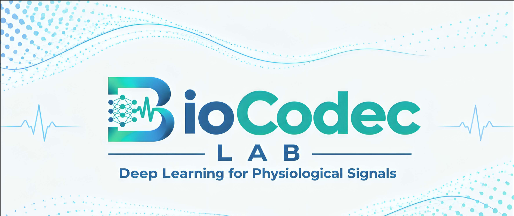

Motion-artifact removal
Denoising PPG and ECG while preserving what clinicians use: beat timing, HRV and waveform morphology.
Deep learning for physiological signals
BioCodec Lab develops transformer and CNN methods that remove motion artifacts, judge signal quality and extract heart rate, HRV and glucose cues from PPG and ECG.
Four connected questions, one goal: biosignals clean enough to trust in daily life.
Denoising PPG and ECG while preserving what clinicians use: beat timing, HRV and waveform morphology.
Gates that decide when a segment is trustworthy, so models fall back gracefully instead of guessing.
Smartphone and wrist heart-rate estimation, arrhythmia classification and non-invasive glucose screening.
Motion-conditioned attention and physiological simulators for training and stress-testing models.
A small, hands-on group. Collaborators and advisors shape the work.
Founder & lead researcher
Undergraduate in Electrical and Electronic Engineering at CUET (CGPA 3.83/4.00). Kaggle Master, research assistant at Sabuj Lab (BRAC University) and research intern at ELITE Research Lab.
Assistant Professor, CUET
Undergraduate research supervisor.
Sabuj Lab, BRAC University
Supervisor, MoWaveQFormer.
ELITE Research Lab
Supervisor, ECG denoising review.
Open positions
Journal articles, conference papers, preprints and work under review.
Select a project to see what it does and how well it works.
We welcome undergraduates and early researchers who like signals, code and careful experiments.
Reproduce baselines, run ablations, write up results.
Clean public PPG/ECG datasets and build evaluation scripts.
Co-develop a focused project toward a paper.
A codec compresses a signal and restores it. We do the same for the body’s signals: keep the information, drop the noise.
BioCodec Lab grew out of undergraduate research at Chittagong University of Engineering and Technology on PPG and ECG denoising, signal quality and non-invasive diabetes screening. Today it connects collaborators at CUET, BRAC University and ELITE Research Lab.
We publish code and results openly where we can, report on real noise rather than only synthetic noise, and test whether cleaner signals change downstream clinical decisions.

Questions, collaborations or press: write to us.
Chattogram, Bangladesh
Department of Electrical and Electronic Engineering, CUET